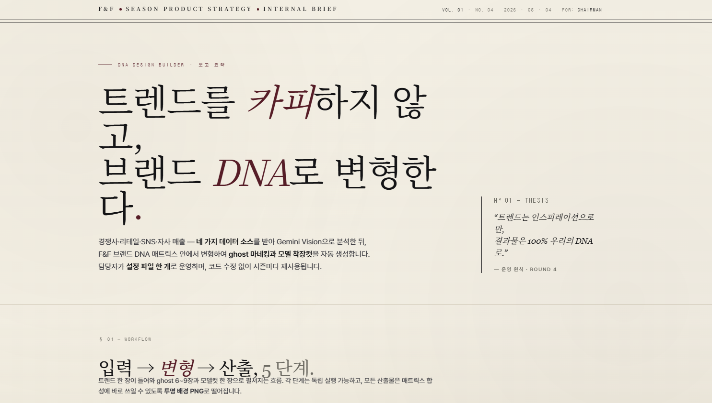
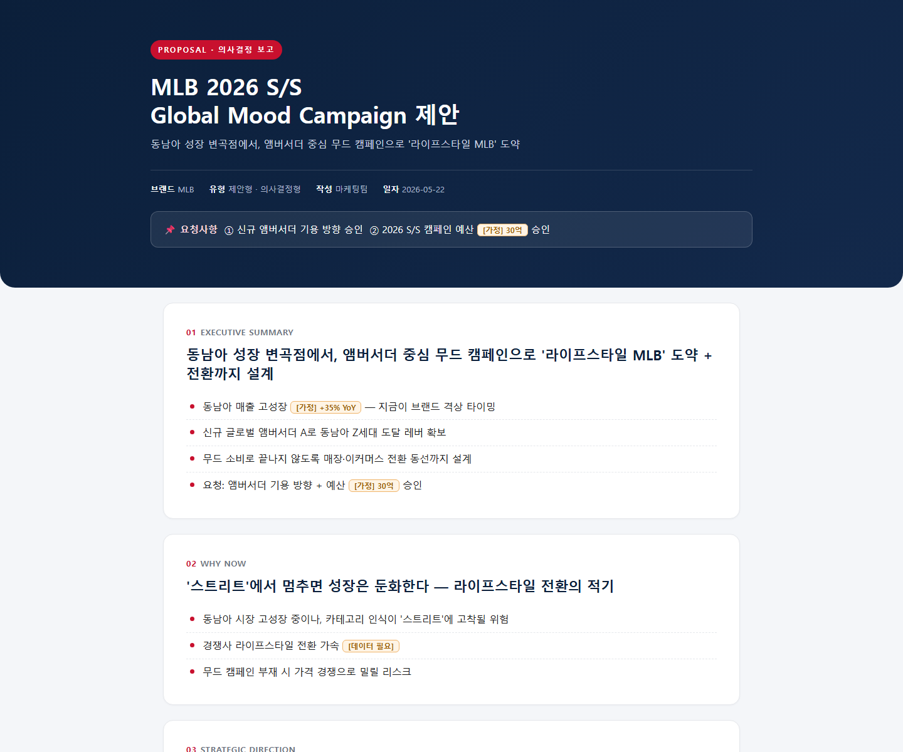

나만의 대시보드를
만들어보다
데이터 → 화면 → 보고서까지 한 흐름으로.
처음 써보시는 분도 본인 대시보드 1개를 들고 나갈 수 있도록 준비했습니다.
5개 챕터로
한 흐름으로 연결
데이터를 받고, 설계를 짜고, 화면을 만들고, 보고서로 묶기까지.
같은 데이터, 같은 흐름으로 함께 진행합니다.
처음 5분,
막힘 없이 핸즈온까지 진입할 수 있도록 함께 점검해요
처음 써보는 분이 많을 거예요. 핸즈온에서 막히는 첫 원인은 보통 환경 세팅 문제..
첫 실행 점검
핸즈온 시작 전에 모두 같은 환경 세팅이 되어 있는지 확인합니다. 잘 안 되는 부분이 있으면 도와드립니다.
- Visual Studio Code가 설치되어 있는가 — 미설치라면 code.visualstudio.com에서 본인 OS에 맞는 버전 설치
- 터미널에서
claude입력 → 정상 실행되는가 - 샘플 데이터
MLB_Sample_data.xlsx를 다운로드 받았는가 -
DCS AI 플러그인이 설치 완료되었는가 — 채팅창에
"DCS AI 도구 목록 알려줘"입력 시 도구 목록(지식그래프·스킬 카탈로그·아티팩트 업로드 등)이 나오면 완료. 미설치라면 사내 사용신청이 먼저 필요합니다.
DCS AI 사용신청하기 →
결과물 먼저,
개념은 짧게.
F&F AX팀 사례
보고서 생성 워크플로우 자동화 — 현재 한국에서는 AX팀 외에도 많은 담당자 분들이 HTML(웹)형태의 보고서를 만들고 활용하고 있습니다.
CEO Report · 보고서를 HTML로
사례 1. F&F Studio
F&F AI Marketing Report
사례 2. F&Co 인플루언서 대시보드 CEO Report
FnCo IF — CEO REPORT
Claude Code의 확장 메커니즘
Claude Code를 이루는 5가지 시스템입니다. Claude Code의 기본 기능들만 알아도 쉽게 보고서 생성이 가능합니다. 오늘은 Skills 마스터가 목표.
| 메커니즘 | 한 줄 설명 | 오늘 워크숍 |
|---|---|---|
| Skills | 특정 작업을 잘하게 만드는 지침서 (markdown) | ✓ 메인 활용 |
| Plugins | 스킬·도구를 묶어서 한 번에 설치하는 패키지 | ✓ 설치에 사용 |
| Memory | 대화·세션을 넘어 Claude가 기억하는 노트 | 개념만 |
| MCP | 외부 데이터·도구 연결 (DB, Slack, Figma 등) | 개념만 |
클로드 코드의 핵심 기능 4가지를
쉽게 풀어보면.
처음 들으면 헷갈리는 용어들입니다. 비유와 예시를 곁들여 정리하면 이렇습니다.

"이런 일은 이렇게" 매뉴얼
Claude에게 "특정 작업을 할 때 이 룰을 따르라"고 미리 적어둔 체크리스트입니다. 스킬을 켜면 Claude가 그 분야의 노하우를 자동으로 따라줍니다.
예) frontend-design 스킬을 켜면 Claude가 'AI 티 안 나는 디자인'을 만드는 룰을 자동 적용합니다.
오늘 직접 사용: frontend-design · xlsx

스킬·도구를 묶어 한 번에 설치
여러 스킬과 명령어를 하나로 묶어서 배포하는 패키지입니다. VS Code 확장 프로그램이나 휴대폰 앱처럼, 한 번 설치하면 그 안의 도구들을 바로 쓸 수 있어요.
예) superpowers 플러그인 하나를 설치하면 brainstorming, writing-plans 등 여러 스킬이 한꺼번에 추가됩니다.
오늘 직접 사용: /plugin install로 워크숍 환경 세팅

대화를 넘어 기억하는 메모장
한 번 알려준 내용을 Claude가 다음 대화에서도 기억합니다. MEMORY.md라는 파일에 자동 저장돼서 프로젝트별로 관리할 수 있어요.
예) "우리 회사 톤은 미니멀"이라고 한 번 적어두면, 다음 대화에서 다시 알려주지 않아도 그 톤으로 작업해줍니다.
오늘은 개념만: 다음 단계의 반복·자동화 작업에서 활용

회사 시스템에 연결하는 USB 포트
Claude를 외부 시스템(Notion · Slack · DB · Figma 등)에 직접 연결시키는 표준 규격입니다. MCP가 연결되면 Claude가 그 시스템을 직접 읽고 쓸 수 있어요.
예) Notion 페이지 자동 정리, Slack 메시지 발송, DB에서 매출 직접 조회, Figma 시안 가져오기.
오늘은 개념만: 다음 분기 자동화 단계에서 본격 활용
오늘은 Skills · Plugins만 직접 써보고, 나머지는 어떤 도구인지 알아가는 시간입니다.
마켓플레이스란?
marketplace는 "플러그인 목록이 담긴 소스(카탈로그)"입니다. 보통 GitHub 저장소 형태이고, 그 안의 marketplace.json 같은 파일에 "이 소스에는 어떤 플러그인들이 있고, 각 플러그인은 어디서 받아오는지"가 적혀 있습니다. /plugin marketplace add는 이 목록의 주소만 Claude Code에 등록할 뿐, 플러그인이나 스킬을 내려받지 않습니다.
- 하나의 marketplace = 여러 플러그인을 담는 카탈로그 (1:N)
- 하나의 플러그인 = 여러 스킬을 담는 묶음 (1:N) — 그래서 플러그인을 설치하면 스킬이 한꺼번에 따라옵니다
- 같은 이름의 플러그인이 여러 marketplace에 있을 수 있어
install시<plugin>@<marketplace>처럼 출처를 함께 지정합니다
marketplace add = 카탈로그(소스) 등록만, 실제 스킬은 plugin install로 플러그인을 설치할 때 함께 들어옵니다.| 명령 | 하는 일 |
|---|---|
/plugin marketplace add <repo> | 카탈로그(소스)만 등록 — 아무것도 설치 안 됨 |
/plugin install <plugin>@<marketplace> | 실제 플러그인 + 스킬 설치 |
- 플러그인 = 스킬 컨테이너. 플러그인을 설치하면 그 안의 스킬이 한꺼번에 따라옵니다. 스킬을 개별로 install하는 게 아니라 플러그인 단위로 설치돼요.
- 설치 후에는 반드시
exit로 종료한 뒤claude를 재시작해야 스킬이 적용됩니다.
실습 1 —
플러그인 설치 및 스킬 등록
실습 예제 — Superpowers · brainstorming skill 설치
Jesse Vincent (obra) 제작, 476,000+ 설치. 한 번에 한 질문씩 소크라테스식으로 묻고, 항상 2-3가지 대안을 제시합니다. YAGNI 원칙으로 design.md 문서를 먼저 만든 뒤 코드를 시작하는 "철의 법칙" 스킬입니다.
1) /plugin marketplace add obra/superpowers-marketplace ← 소스 등록 2) /plugin install superpowers@superpowers-marketplace ← 실제 설치 (스킬 포함) 3) "Install for you (user scope)" 선택 ← 설치 범위 4) exit 후 claude 재시작 ← 적용
💡 설치 여부 확인 — /plugin 이나 /skills 로 설치여부 확인 가능.
🔥실제로 가장 많이 쓰이는 Claude Code Skills Top 10 — 펼쳐보기
개별 스킬 기준. 출처 Stars 수는 작성 시점 기준입니다.
| # | 스킬 | 출처 | 용도 · 핵심 기능 |
|---|---|---|---|
| 1 | test-driven-development | obra/superpowers (18.5k+★) | RED-GREEN-REFACTOR 강제 적용. 테스트 없이 작성한 코드는 자동 삭제하고 실패 테스트부터 작성 유도 — 디버깅보다 처음부터 제대로가 더 빠르다는 철학. |
| 2 | systematic-debugging | obra/superpowers (18.5k+★) | 버그 발생 시 4단계 체계적 프로세스. root-cause-tracing · defense-in-depth · condition-based-waiting 통합. 검증 후에야 "해결" 보고. |
| 3 | docx | anthropics/skills (40.2k★) · 공식 | Word 문서 생성·편집·분석. 변경 추적(Track Changes)·댓글·서식 유지·텍스트 추출. Claude.ai 문서 생성이 이 스킬로 구현됨. |
| 4 | anthropics/skills (40.2k★) · 공식 | PDF 텍스트/테이블 추출·생성·병합/분할·폼 처리. OCR 없이 텍스트 추출, 폼 필드 채우기, 주석 달기. | |
| 5 | mcp-builder | anthropics/skills (40.2k★) · 공식 | MCP 서버 생성 가이드. Python(FastMCP) / TypeScript(MCP SDK) 기반. Slack·GitHub·DB 연동 도구 직접 제작. |
| 6 | subagent-driven-development | obra/superpowers (18.5k+★) | 서브에이전트에 작업 위임 후 2단계 리뷰(스펙 준수 → 코드 품질). 대규모 리팩토링·병렬 개발에 유용. |
| 7 | webapp-testing | anthropics/skills (40.2k★) · 공식 | Playwright 기반 로컬 웹앱 테스팅. UI 검증·디버깅·스크린샷. 버튼 클릭·폼 입력·결과 확인 자동 수행. |
| 8 | skill-creator | anthropics/skills (40.2k★) · 공식 | 커스텀 스킬 생성 가이드(메타 스킬). Q&A 기반 인터랙티브 생성, SKILL.md 자동 구조화. |
| 9 | frontend-design | anthropics/skills (40.2k★) · 공식 | 프론트엔드 UI 디자인. React/Tailwind 기반, 제네릭 'AI 느낌' 회피. 프로덕션급 독특한 디자인 생성. |
| 10 | ios-simulator-skill | conorluddy (커뮤니티) | iOS 시뮬레이터 제어. 앱 빌드·내비게이션·자동화 테스트. Claude가 Xcode 시뮬레이터 직접 제어. |
설치 예시
# Superpowers (TDD · systematic-debugging · subagent 등) /plugin marketplace add obra/superpowers-marketplace /plugin install superpowers@superpowers-marketplace # Anthropic 공식 (docx · pdf · mcp-builder · frontend-design 등) /plugin marketplace add anthropics/skills /plugin install document-skills@anthropic-agent-skills
보너스 — 주목할 만한 커뮤니티 스킬
| 스킬명 | 용도 | 링크 |
|---|---|---|
| ffuf-web-fuzzing | 웹 퍼징/보안 테스트 | jthack/ffuf_claude_skill |
| postgres | PostgreSQL 안전한 쿼리 실행 | sanjay3290/postgres |
| claude-scientific-skills | 125+ 과학 연구 스킬 | K-Dense-AI/claude-scientific-skills |
| react-best-practices | React 베스트 프랙티스 | vercel-labs/react-best-practices |
| varlock-claude-skill | 환경변수 보안 관리 | varlock/varlock-claude-skill |
| linear-claude-skill | Linear 이슈 관리 | wrsmith108/linear-claude-skill |
본격적인 대시보드 만들기에 앞서
5분 계획이 전체의 완성도를 좌우합니다.
이번 워크숍에서 가장 중요한 파트입니다. PLAN을 한 장 미리 적어두면, 마지막 디자인의 완성도가 크게 달라집니다.
5단계 PLAN 워크시트
한 장짜리 워크시트입니다. 5칸을 차례로 채우면 끝나요.
1️⃣ 목적 "누가 / 언제 / 어떤 의사결정을 위해 보는가?" 예: 마케팅팀이 매주 월요일 캠페인 ROI 점검 2️⃣ 데이터 - 어떤 데이터? 매출 / 마케팅 / 재고 / VOC / KG(지식그래프) - 어디서? Excel · 자사몰 · 무신사 API · 네이버 · 사내 ERP - 형태? CSV / Excel / JSON 3️⃣ 화면 스케치 (손그림 OK) - 한 화면에 들어갈 핵심 지표 3-5개 - 차트 타입 (막대 / 라인 / 지도) 4️⃣ 보고서 형식 - HTML? 엑셀? - 누구에게 전달? 5️⃣ 배포 - 본인 PC에서만? URL로 공유?
plan 짜는 방법 — Plan Mode
Plan Mode — 설치 없이 바로 사용
VS Code 확장 프로그램으로 Claude Code 설치 후 즉시 사용 가능합니다. Shift + Tab 두 번 → Plan Mode 진입.
혹은 터미널에 /plan 이라고 적으시면 모드가 변경됩니다
Plan Mode가 켜진 상태에서는 Claude가 먼저 계획을 화면에 보여주고, OK를 받기 전까지 절대 코드를 쓰지 않습니다. "이대로 진행할까요?"라고 물어보고, 사용자가 승인해야 그때부터 실제 작업이 시작됩니다.
실습 2 —
MLB 매출 데이터 시나리오.
샘플 데이터는 MLB_Sample_data.xlsx 를 사용합니다.
Plan Mode를 켠 상태로 아래 시나리오의 PLAN 워크시트 1장을 함께 채워봅니다.
예시 프롬프트 — Plan Mode로 계획부터
Shift + Tab 두 번으로 Plan Mode를 켠 다음 아래 프롬프트를 복사해 붙여넣으세요. Claude가 먼저 설계안(계획)을 보여주고, 사용자가 OK하기 전엔 코드를 쓰지 않습니다.
Plan Mode를 켠 상태에서 시작합니다. 샘플 데이터(MLB_Sample_data.xlsx)를 분석해서 "매주 월요일 채널·카테고리 성과를 점검하기 위한" 주간 매출 대시보드의 설계안을 만들어줘. (대시보드 제작 금지) [데이터 구조] - 시트: 개요 / 채널별매출비교 / 카테고리별매출비교 / 상위카테고리_TOP5제품 / 인사이트 - 기준: 금주(2026-05-11~17) vs 전년 동주(2025-05-12~18) — YoY 비교 - 컬럼: 금주_판매액, 전년_판매액, 판매액_증감, 판매액_신장율(%), 금주_판매수량, 전년_판매수량, 판매수량_증감, 판매수량_신장율(%) 계획에 포함할 내용: - 핵심 지표 3~5개 · 총매출 KPI (금주 vs 전년 동주, 신장율) · 채널별 판매액 + 신장율 (TOP 채널 강조) · 카테고리별 판매액 + 신장율 · 상위 카테고리별 TOP5 제품 (NEW 상품 표시) · 인사이트 시트 요약 카드 - 차트 타입 후보: KPI 카드 + 가로 막대(신장율) + 히트맵(채널/카테고리) + 테이블 - 스타일 방향: AI 기본 스타일 금지, 미니멀(여백·타이포 중심) - 데이터 흐름: xlsx 직접 읽기(pandas/openpyxl) → 시트별 가공 → 시각화 - 화면 레이아웃 스케치: 상단(KPI) / 중단(채널·카테고리) / 하단(TOP5 + 인사이트) 설계안 만들어줘. (코드는 작성하지 말고, 설계안만)
Skill 활용해서
대시보드 디자인하기.


"AI스럽지 않게" 만드는 4가지 탈출 전략
-
frontend-design skill 강제 활성화
/frontend-design명령어로 시작하거나, 프롬프트에 "frontend-design skill을 적극 활용해줘" 한 줄을 추가합니다.왜 효과적인가이 skill 자체가 Anthropic이 'AI 시그니처 회피' 룰을 학습시켜둔 매뉴얼입니다. 켜기만 해도 폰트 페어링·컬러 팔레트·여백 체계·디자인 토큰을 자동으로 정돈해줘요. 277K+ 다운로드를 받은 가장 검증된 디자인 skill입니다.
-
레퍼런스 명시(design.md)
"예쁘게 만들어줘" 대신 "이 사이트 스타일로"처럼 구체적인 시안을 짚어줍니다. awesome-design-md, skills.sh 같은 모음에서 본인 톤과 비슷한 시안을 골라 URL이나 이미지로 첨부.
-
브랜드 톤 명시
"우리 회사는 미니멀 / 클래식 / 스트리트" — 형용사 한 단어라도 못 박는 것이 결과물의 차이를 만듭니다.
패션 업계 적용MLB는 "스트리트 클래식", Discovery는 "아웃도어 캐주얼" 처럼 본인 브랜드의 톤을 한 단어로 정의해 프롬프트에 박아넣습니다. 톤이 명확할수록 Claude의 결과물이 흔들리지 않고, 여러 번 돌려도 일관성이 유지됩니다.
실무 팁회사가 이미 가진 자료도 좋은 레퍼런스가 됩니다. 브랜드 가이드, 매장 사진, 기존 브로셔, 룩북 페이지를 그대로 첨부하면 Claude가 그 톤을 따라가요. 외부 시안보다 내부 자료가 더 정확한 경우가 많습니다.
🍎Apple.com 디자인 시스템 — 이렇게 정리해두면 AI가 따라가기 쉬워요 (예시)
참고 자료 · 실제 디자인 시스템 예시Apple.com 디자인 시스템 — 이렇게 정리해두면 AI가 따라가기 쉬워요
실제 Apple.com이 어떤 디자인 시스템을 따르는지 정리한 문서입니다. 노란색 하이라이트로 표시한 부분이 본인 브랜드/제품에 맞게 바꿔야 할 자리예요. 같은 구조로 우리 회사 디자인 가이드를 만들어두면, 프롬프트에 한 번 첨부할 때마다 일관된 결과가 나옵니다.
① Overview · 한 줄 컨셉
"제품 사진을 거의 보이지 않는 UI로 감싸는 미니멀 카탈로그" — Apple은 모든 페이지를 풀블리드 제품 타일이 light/dark 번갈아 쌓이는 구조로 잡는다. 어떤 요소도 제품과 경쟁하지 않는다.
② Brand & Accent · 단일 액센트 컬러
- Action Blue:
#0066cc— 모든 인터랙티브 요소(링크, CTA, 포커스). 두 번째 브랜드 컬러는 없음. - Focus Blue:
#0071e3— 키보드 포커스 링 전용 - Sky Link Blue:
#2997ff— dark 타일 위에서만 사용
③ Surface · 캔버스 톤
- Pure White:
#ffffff - Parchment (시그니처 off-white):
#f5f5f7— light 타일 교대용 - Near-Black Tile:
#272729— dark 타일 / 풀블리드 제품 진열대 - Pure Black:
#000000— 글로벌 nav 바에만
④ Text · 잉크 톤
- Near-Black Ink:
#1d1d1f— 모든 헤드라인·본문. 순수 #000은 안 씀 (인쇄가 아닌 사진 같은 느낌). - Body On Dark:
#ffffff - Body Muted (dark 위):
#cccccc
⑤ Typography · 폰트 시스템
- Display:
SF Pro Display— 19px 이상 헤드라인용 (Apple 자체 폰트) - Body / UI:
SF Pro Text— 20px 미만 본문용 - 대체 폰트: 시스템 스택
system-ui, -apple-system우선, 비-Apple 환경에선 Inter가 가장 가까움
⑥ Type Scale · 위계
- Hero Display: 56px / 600 / line 1.07 / tracking -0.28px — Apple 시그니처 "tight" 헤드라인
- Tile Display: 40px / 600 / line 1.10 — 제품 타일 헤드라인
- Body: 17px / 400 / line 1.47 / tracking -0.374px — 16px가 아닌 17px, Apple만의 readability 기준
- Caption: 14px / 400 / -0.224px
- Weight ladder: 300 / 400 / 600 / 700 — 500은 의도적으로 제외
⑦ Spacing & Layout · 리듬
- Base unit: 8px (4 / 8 / 12 / 16 / 20 / 24 / 32 / 48 / 80)
- Section vertical padding: 80px (제품 타일 안쪽)
- 타일 사이 gap: 0px — 색상 변화 자체가 구분선
- Max content width: 980px (텍스트), 1440px (그리드)
⑧ Elevation · 그림자 철학
- 그림자는 딱 하나:
rgba(0, 0, 0, 0.22) 3px 5px 30px - 적용 대상: 제품 사진에만. 카드·버튼·텍스트엔 절대 안 씀
- UI 위계는 (a) 표면 색 변화 + (b) backdrop-blur로 표현
⑨ Border Radius · 모서리
- None (0px): 풀블리드 타일 (모서리 라운딩 없음)
- Small (8px): dark 유틸리티 버튼 (Sign In, Bag)
- Large (18px): 스토어 유틸리티 카드
- Pill (9999px): primary 액션 — 파란 pill CTA, 검색 input, 설정 chip
⑩ Photography Direction · 촬영 톤
"제품 사진이 주인공, UI는 사라진다". 풀블리드 21:9 또는 16:9 히어로 이미지. 제품 렌더는 PNG 투명 배경에 표면 위 그림자 하나만 받아서 무게감을 만든다. 데코레이션 그라데이션은 없음 — 분위기는 모두 사진에서 온다.
⑪ Don'ts · 금지 사항
- 두 번째 액센트 컬러 추가 금지 — 모든 "click me"는 단일 Action Blue
- 카드·버튼·텍스트에 그림자 추가 금지 — 그림자는 제품 사진 전용
- 장식용 그라데이션 배경 금지 — 분위기는 사진에서
- 본문에 weight 500 금지 — 사다리는 300 / 400 / 600 / 700
- 풀블리드 타일 모서리 라운딩 금지 — 색 변화가 구분선
- 본문 line-height 1.47 미만으로 줄이지 않기 — editorial 페이스의 일부
- Action Blue:
-
Bad vs Good 예시 주입
피해야 할 패턴을 직접 알려줘야 그쪽으로 안 그립니다. "이런 건 금지" 리스트의 회피 효과가 의외로 큽니다.
예시"보라 그라데이션 금지, Inter 폰트 금지, 모든 모서리에 큰 radius 금지"처럼 명시적으로 적어두면 그 방향으로 가지 않습니다. Bad 예시 1장 + Good 예시 1장을 함께 첨부하면 더 정확하게 따라와요.
- web-design-guidelines — UI 품질 자동 검사 (133K+ 설치)
/rename— 현재 대화의 이름을 바꿉니다. 여러 프로젝트를 동시에 진행할 때MLB 주간 매출 대시보드처럼 작업명이 보이도록 정리하면 다시 찾기 쉽습니다./resume— 이전 대화를 이어서 엽니다. 워크숍 중 만든 대시보드 작업을 나중에 다시 불러와 수정하거나 배포 단계부터 계속 진행할 때 사용합니다.
실습 3 — Plan을 기반으로
데이터를 대시보드로, 직접 만들어보기.
-
PLAN 작성
앞서 sample data로 생성된 PLAN을 바탕으로 대시보드를 만들어봅니다.
-
디자인 다듬기
https://github.com/VoltAgent/awesome-design-md 에서 사용하고 싶은 브랜드의
design.md코드를 활용해서 대시보드의 디자인을 업데이트해봅니다. *2차 결과물 -
품질 체크
화면 이미지를 직접 확인해보고 폰트 깨짐, 멘트 수정이 필요한 영역 등을 점검 → html 파일을 직접 수정해봅니다.
시나리오 프롬프트 템플릿
MLB_Sample_data.xlsx 를 분석해서 "매주 월요일 채널 ROI를 점검하기 위한" 주간 매출 대시보드를 HTML 단일 파일로 만들어줘. 핵심 지표 (3-5개): - 채널별(자사몰 / 무신사 / 네이버) 주간 매출 합계 - 전주 대비 증감률 - Top10 상품 (매출 기준) - 카테고리×채널 히트맵 차트: 막대 + 라인 + 히트맵 스타일: AI 기본 스타일 금지, 미니멀 frontend-design skill, xlsx skill 활용
🎨심화 · Figma 시안을 그대로 코드로 (Figma MCP)
Figma 시안을 그대로 코드로 (Figma MCP)
URL·이미지 첨부보다 한 단계 정확한 방법입니다. Figma의 Dev Mode MCP 서버를 Claude Code에 연결하면, 피그마에서 선택한 프레임의 레이아웃·간격·색상·폰트·컴포넌트 구조를 Claude가 직접 읽어 코드로 옮깁니다. 디자이너 시안이 있을 때 "느낌만 비슷하게"가 아니라 스펙 그대로 구현됩니다.
-
Figma에서 Dev Mode MCP 서버 켜기
Figma 데스크톱 앱에서 Dev Mode MCP Server를 활성화하면 로컬에
http://127.0.0.1:3845/mcp엔드포인트가 열립니다. 메뉴 경로는 Figma 버전에 따라 다르며(예: Preferences 내부, 또는 Dev Mode 화면의 우측 패널 등), 공식 가이드를 참고하세요 — Figma 공식 — Dev Mode MCP Server.전제Figma 유료 시트(Professional / Organization / Enterprise + Dev Mode 권한)가 필요합니다. 무료 계정·웹 브라우저 Figma에서는 메뉴 자체가 보이지 않습니다.
-
Claude Code에 MCP 등록
채팅창에서 아래로 Figma MCP 서버를 한 번 등록한 뒤, Claude Code를 재시작합니다.
claude mcp add --transport http figma http://127.0.0.1:3845/mcp
활용 예시 — 이커머스 확장
Claude Code에 Figma MCP를 연동하여, 브랜드별 상세페이지 규칙과 채널별 배너 규칙을 스킬(Skill)로 문서화하고 AI 이미지 생성부터 채널 배너 일괄 생성까지 E2E 자동화 파이프라인을 구축합니다.
Figma MCP 연동
Claude Code에 Figma MCP를 연결하여 디자인 자동화 기반을 구축합니다.
🔌설치 방법 — Talk To Figma MCP Plugin 연결 (도구 제한 시 대안)
Dev Mode MCP 사용이 어려운 환경(무료/Starter 시트, 보안 정책 등)에서 활용할 수 있는 대안입니다. Talk To Figma MCP Plugin을 통해 WebSocket 기반으로 Figma와 Claude Code를 연결합니다.
-
1️⃣ Figma 데스크탑 + 플러그인 설치
Figma 데스크탑 앱에서 Talk To Figma MCP Plugin을 설치하고
Connect를 누르면 WebSocket 서버와 채널이 자동 생성됩니다..png)
-
2️⃣ Claude Code에 MCP 등록
아래 명령으로 MCP 서버를 등록합니다.
claude mcp add TalkToFigma -- bunx cursor-talk-to-figma-mcp@latest
-
3️⃣ 채널명 전달
플러그인에서 생성된 채널명을 복사해 Claude Code 채팅창에 알려줍니다. (예:
join channel abc-123).png)
-
4️⃣ 연결 완료
이제 Claude Code로 Figma에 직접 수정 요청을 보낼 수 있습니다. (요소 생성·텍스트 변경·레이아웃 조정·컴포넌트 인스턴스 생성 등)
🛠️사용 가능한 도구 목록 (펼치기)
📄 문서 및 선택
get_document_info— 현재 Figma 문서 정보 가져오기get_selection— 현재 선택 항목 정보 확인read_my_design— 선택 항목의 상세 노드 정보 가져오기 (매개변수 없음)get_node_info— 특정 노드의 상세 정보 확인get_nodes_info— 노드 ID 배열로 여러 노드 정보 일괄 조회set_focus— 특정 노드 선택 + 뷰포트 스크롤 포커싱set_selections— 여러 노드 선택 + 뷰포트 스크롤
💬 주석
get_annotations— 문서/노드의 모든 주석 가져오기set_annotation— 마크다운 지원 주석 생성/업데이트set_multiple_annotations— 여러 주석 일괄 처리scan_nodes_by_types— 특정 유형 노드 검색 (주석 대상 찾기)
🔗 프로토타이핑 및 연결
get_reactions— 노드의 프로토타입 반응 가져오기 (시각적 강조 애니메이션)set_default_connector— FigJam 기본 커넥터 스타일 설정create_connections— 노드 간 FigJam 연결선 생성
➕ 요소 생성
create_rectangle— 사각형 생성 (위치·크기·이름)create_frame— 프레임 생성create_text— 텍스트 노드 생성 (글꼴 속성 커스터마이징)
✏️ 텍스트 내용 수정
scan_text_nodes— 대규모 디자인에서 지능형 청킹으로 텍스트 노드 스캔set_text_content— 단일 텍스트 노드 내용 변경set_multiple_text_contents— 여러 텍스트 노드 일괄 업데이트
📐 자동 레이아웃 및 간격
set_layout_mode— 레이아웃 모드/줄바꿈 설정 (none, horizontal, vertical)set_padding— 자동 레이아웃 패딩 (상·우·하·좌)set_axis_align— 기본 축/반대 축 정렬set_layout_sizing— 가로·세로 크기 조정 (fixed, hug, fill)set_item_spacing— 자식 요소 간격
🎨 스타일링
set_fill_color— 채우기 색상 (RGBA)set_stroke_color— 선 색상·두께set_corner_radius— 모서리 반지름 (모서리별 개별 조절 가능)
🧩 레이아웃 및 구성
move_node— 위치 이동resize_node— 크기 조정delete_node— 노드 삭제delete_multiple_nodes— 여러 노드 일괄 삭제clone_node— 기존 노드 복사 (위치 오프셋 지정 가능)
🧱 컴포넌트 및 스타일
get_styles— 로컬 스타일 정보 조회get_local_components— 로컬 컴포넌트 정보 조회create_component_instance— 컴포넌트 인스턴스 생성get_instance_overrides— 인스턴스의 재정의 속성 추출set_instance_overrides— 추출된 재정의를 대상 인스턴스에 적용
DCS AI로
사내 배포까지 한 번에.
F&F DCS AI를 Claude Code에 연결해두면, 채팅 한 줄로 대시보드·보고서 자료를 사내 환경에 배포할 수 있습니다.
대시보드 배포 — 어디에 어떻게 공유할까
오늘 만든 HTML 파일을 어떻게 팀에 공유할지 정합니다. 본인 환경·정책에 맞춰 골라 쓰면 됩니다.
| 방법 | 시간 | 용도 |
|---|---|---|
| 로컬 HTML | 1초 | 본인만 보기 · 즉시 사용 |
| HTML 배포 | 정책 따름 | 내부 공유 가능 |
| 메신저·메일에 압축 파일 공유 | 시간 소요 | 1:1 · 소그룹 공유 |
HTML은 단일 파일이라 그대로 첨부·공유하면 받는 사람이 브라우저로 바로 열 수 있습니다.(단, 이미지는 포함이 안 될 수 있으니 확인이 필요합니다)
HTML은 DCS AI로 배포 링크를 공유하면 링크가 있는 사람들끼리 공유가 가능합니다.
DCS AI란?
F&F가 사내에서 운영하는 AI 인프라/도구 묶음입니다. Claude Code의 MCP(외부 시스템 연결) 메커니즘으로 연결되면 Claude가 사내 리소스를 직접 다룰 수 있어요.
- 사내 인증된 환경에서 동작 — 데이터·자료가 외부로 나가지 않음
연결 방법
연결 방법 1·2는 사전에 안내드려 대부분 완료된 상태입니다. 아직 DCS AI를 설치하지 않으신 분만 아래 토글을 펼쳐 따라 해주세요.
🔌아직 DCS AI를 설치하지 않으신 분들을 위한 사용방법
-
DCS AI 플러그인 설치
Claude Code 채팅창에 아래 명령어로 DCS AI MCP 플러그인을 한 번 설치합니다. 이후 Claude Code를 한 번 재시작하면 도구가 자동으로 등록됩니다.
/plugin install dcs-ai-common
-
사내 인증 확인
처음 한 번은 사내 인증 절차를 거칩니다. (사내 SSO / DCS 계정) 인증이 끝나면 Claude가 DCS AI 도구 목록을 인식합니다.
확인 방법채팅창에
"DCS AI 도구 목록 알려줘"라고 물어보면 사용 가능한 기능을 나열해줍니다. 지식그래프 조회, 스킬 카탈로그, 아티팩트 업로드 등이 보이면 성공.
배포 프롬프트 예시
아래 프롬프트를 그대로 복사해 채팅창에 붙여넣으세요. Plan Mode가 켜져 있다면 먼저 배포 계획을 보여주고, OK 후 실제 업로드를 진행합니다.
please deploy dashboard
심화 학습 — Agent와 Hook을 직접 만들어 보기
Hook이란? — 자동 시작·자동 마무리 트리거
Claude가 어떤 일을 시작할 때 / 끝낼 때 자동으로 같이 돌릴 작업을 미리 등록해두는 것입니다. 한번 등록하면 매번 신경 안 써도 자동으로 실행됩니다.
예) 파일이 저장될 때마다 자동 검사, 매주 월요일 아침 보고서 자동 새로고침, 결과 파일이 생기면 사내 메신저로 자동 발송.
🧠매주 자동 보고서 만들기 — Agent + Hook 자동화 가이드 펼치기
Agent 파일과 Hook 설정으로 매주 보고서를 자동 생성
"매주 데이터만 바꾸면 보고서가 알아서 생성되는" 구조의 핵심은 Agent를 어떻게 정의하느냐와 Hook을 어떻게 트리거하느냐입니다. 둘 다 파일 하나만 추가하면 끝납니다.
Agent는 한 가지 작업을 잘하도록 미리 설정해둔 보조 Claude입니다. "이건 네가 알아서 해줘"라고 위임하면 별도 공간에서 작업하고 결과만 돌려줍니다.
핵심 특징
- 역할이 좁다 — 보고서 생성 등 한 가지 작업 전용
- 컨텍스트 분리 — 별도 공간에서 작업해 메인 대화를 깔끔하게 유지
- 필요할 때만 동작 — 호출할 때만 실행, 평소엔 비활성
- 도구 권한 분리 — agent마다 사용 가능한 도구를 따로 지정
왜 쓰는가
- 반복 작업을 한 줄로 호출 — 긴 프롬프트 복붙 불필요
- 메인 Claude의 컨텍스트 절약 — 복잡한 작업을 위임
- 팀원 간 일관된 품질 — 동일한 지시문으로 통일
워크숍 예시
매출 데이터(xlsx) → 대시보드(HTML) → 공유 링크. 이 흐름을 weekly-report agent에 저장해두면, 다음 주엔 한 줄이면 끝.
Subagent는 별도 프로그램이 아니라 마크다운 파일입니다. ~/.claude/agents/(전역) 또는 .claude/agents/(프로젝트별) 폴더에 .md 파일을 만들면 Claude Code가 자동 인식합니다.
① 파일 생성
② 파일 내용 (YAML frontmatter + 본문)
③ 호출 방법 — 메인 Claude 채팅창에서 한 줄로 위임
→ Claude가 weekly-report.md를 읽고 별도 컨텍스트에서 작업, 메인 대화는 깔끔하게 유지됩니다.
Hook은 .claude/settings.json(프로젝트) 또는 ~/.claude/settings.json(전역)에 이벤트 + 실행 명령어를 적어두면 끝입니다. Hook이 발화되는 이벤트는 5가지:
- PreToolUse — 도구 호출 직전
- PostToolUse — 도구 호출 직후 (가장 많이 씀)
- UserPromptSubmit — 사용자가 메시지 보낼 때
- Stop — 대화 종료 시
- Notification — 알림 발생 시
예시 — 대시보드 HTML이 갱신되면 자동으로 사내 메신저 알림 발송
→ Edit/Write 도구로 파일이 저장될 때마다 notify.ps1이 자동 실행됩니다. matcher는 정규식이라 특정 파일만 트리거하도록 좁힐 수도 있어요.
Hook이 호출하는 스크립트는 표준 입력으로 JSON을 받습니다. 어떤 도구가 어떤 파일에 작업했는지 그 JSON에서 꺼내 쓰면 됩니다.
예시 — .claude/hooks/notify.ps1
→ 본 Claude의 hook이 또 다른 Claude를 백그라운드로 spawn해서 알림 작업을 위임. 메인 작업 흐름은 중단되지 않습니다.
운영체제 스케줄러(Windows 작업 스케줄러 또는 cron)와 결합하면 시간 기반 자동 발화가 됩니다:
OS 스케줄러
"주간 보고서"
agent 실행
메신저 알림 발송
① OS 스케줄러 (Windows 예시)
② 흐름
- 월요일 9시 → OS 스케줄러가
claude -p명령 실행 - Claude가
weekly-report에이전트를 자동으로 호출 - 에이전트가 데이터 읽기 → 대시보드 생성 수행
- PostToolUse hook이 결과 파일 감지 → 사내 메신저로 링크 발송
→ 한 번 설정해두면 사람은 결과 메시지만 확인하면 됩니다.
.claude/agents/weekly-report.md— 무슨 일을 할지 정의.claude/settings.json— 어떤 이벤트에 무엇을 실행할지 등록.claude/hooks/notify.ps1— 실제 실행할 스크립트
사내 보안 환경에서는 DCS AI MCP(다음 챕터)와 조합해 데이터 가져오기·결과 업로드까지 사내에서 완결되는 무인 파이프라인을 구축할 수 있습니다.
💡 TIP — 위 내용이 어려우시면, 위 0~5번 내용을 그대로 드래그해서 Claude에게 요청해보세요. Claude가 순차적으로 파일을 만들어주고 설정까지 완료해줍니다. "위 내용대로 weekly-report agent와 hook 만들어줘" 한 줄이면 끝.
스킬 생성하기 —
우리 팀 전용 스킬 직접 만들기
스킬은 설치만 하는 게 아니라 직접 만들 수도 있습니다. 반복되는 우리 팀 업무 규칙을 스킬로 박제해두면, 매번 똑같이 설명할 필요 없이 /스킬이름 한 줄로 동일한 품질을 반복 생산할 수 있습니다. 아래는 마케팅팀 '대표님 보고서 제작 SOP'를 marketing-report-sop 스킬로 만든 실제 과정입니다.

mkt_report_test/MLB_2026SS_campaign_report.html스킬(Skill) = 작업 방식의 매뉴얼
스킬 하나는 폴더 하나입니다. 그 안의 SKILL.md 가 ① 언제 쓰는지(트리거) 와 ② 어떻게 하는지(절차)를 담고, 양식·프롬프트처럼 무거운 내용은 별도 파일로 분리합니다. ~/.claude/skills/ 아래 두면 모든 프로젝트에서 /스킬이름 으로 불러쓸 수 있어요.
만든 과정 — 5단계
-
① 원칙 문서부터 준비
스킬에 담을 업무 규칙을 먼저 글로 정리합니다. 여기서는 보고서 SOP 원칙(생산라인 운영 · 사람/AI 역할 분담 · 단계 분리 · AI 워싱 1회)과 참고 자료를 모았습니다.
핵심스킬은 "AI가 알아서"가 아니라 사람이 이미 아는 좋은 방식을 문서로 박제하는 작업입니다. 규칙이 흐릿하면 스킬도 흐릿해집니다.
-
② writing-skills 스킬로 골격 잡기
스킬 만드는 법을 알려주는 메타 스킬(
writing-skills/ 공식skill-creator)을 켜고 시작합니다. 핵심 방법론은 RED → GREEN → REFACTOR — 스킬이 없을 때 AI가 어떻게 행동하는지 먼저 관찰하고, 그 빈틈을 메우도록 스킬을 씁니다. -
③ SKILL.md 작성
맨 위 frontmatter(이름 · 설명)와 본문(단계 · 역할 분담 · 절대 금지사항 · 체크리스트)을 적습니다. 설명(
description)에는 "언제 쓰는지"만 적고 절차 요약은 넣지 않는 게 요령입니다. -
④ 무거운 내용은 템플릿 파일로 분리
입력 양식·프롬프트·산출 가이드처럼 분량이 큰 자료는 SKILL.md에서 빼서 별도 파일로 두고, 본문에서는 "
input-sheet.md 참조"처럼 가리킵니다. 본체가 가벼워야 AI가 빠르게 읽습니다. -
⑤ 테스트로 검증
같은 요청("급하니까 바로 HTML로 만들어줘")을 스킬 없이 / 스킬 있이 각각 던져 행동이 바뀌는지 확인합니다. 스킬을 켜자 곧장 HTML로 가지 않고 'Input 정리'부터 시작하면 성공입니다.
폴더 구조 — 이렇게 생겼습니다
~/.claude/skills/marketing-report-sop/ ├─ SKILL.md ← 핵심: 언제 쓰는지 + 3단계 프로세스 + 금지사항 ├─ input-sheet.md ← 템플릿1: 보고 Input Sheet 양식 ├─ ai-prompts.md ← 템플릿2: 단계별 AI 프롬프트 3종 └─ html-output.md ← 템플릿3: HTML 산출 가이드
SKILL.md 맨 위 — frontmatter 예시
--- name: marketing-report-sop description: Use when 마케팅팀에서 대표님/임원 보고서를 제작하거나 기획할 때. 감으로 만들지 않고 Input → 문안 확정 → HTML 산출의 표준 생산 프로세스로 운영하기 위한 SOP. --- # 마케팅팀 대표님 보고서 제작 SOP ## 핵심 원칙 ... ## 단계 진행 규칙 (Iron Rule) ... ## 절대 금지사항 ...
호출 — 만든 다음엔 이렇게 씁니다
1) 스킬 폴더를 ~/.claude/skills/ 아래에 둔다 2) claude 재시작 → /skills 로 등록 확인 3) 채팅창에 /marketing-report-sop 입력 후 보고 주제를 적는다 4) 스킬이 Input부터 차례로 끌고 간다 (단계 건너뛰기 차단)
✍️description(설명) 잘 쓰는 법 — 펼쳐보기
description은 AI가 "지금 이 스킬을 읽어야 하나?"를 판단하는 유일한 단서입니다. 트리거(언제)만 적고, 절차 요약은 빼는 게 핵심이에요. 절차를 요약하면 AI가 본문을 안 읽고 그 한 줄만 따라가는 함정에 빠집니다.
| 구분 | 예시 |
|---|---|
| ❌ 나쁨 (절차 요약) | "보고서를 Input 정리하고 문안 만든 뒤 HTML로 산출한다" |
| ❌ 나쁨 (너무 추상) | "보고서 작성용" |
| ✅ 좋음 (트리거만) | "Use when 마케팅팀에서 대표님/임원 보고서를 제작·기획할 때" |
skill-creator— Q&A로 물어보며SKILL.md를 자동 구조화 (Anthropic 공식)
marketing-report-sop
스킬 파일 전문
스킬은 폴더 하나 = 파일 4개로 구성됩니다. SKILL.md가 "언제 쓰는지 + 3단계 프로세스 + 금지사항"의 핵심을 담고, 무거운 양식·프롬프트·산출 가이드는 템플릿 3개 파일로 분리되어 있습니다. 아래 토글을 펼치면 각 파일의 전체 내용을 그대로 확인·복사할 수 있습니다.
폴더 구조
~/.claude/skills/marketing-report-sop/ ├─ SKILL.md ← 핵심: 언제 쓰는지 + 3단계 프로세스 + 금지사항 ├─ input-sheet.md ← 템플릿1: 보고 Input Sheet 양식 ├─ ai-prompts.md ← 템플릿2: 단계별 AI 프롬프트 3종 └─ html-output.md ← 템플릿3: HTML 산출 가이드
🧭SKILL.md — 핵심 SOP (언제 · 3단계 · 금지사항)
--- name: marketing-report-sop description: Use when 마케팅팀에서 대표님/임원 보고서(의사결정형·현황형·제안형)를 제작하거나 기획할 때, 보고 자료를 만들기 시작할 때, "보고서 알아서 만들어줘" 같은 요청을 받았을 때. 감으로 만들지 않고 Input → 구조/문안 확정 → 비주얼/HTML 산출의 표준 생산 프로세스로 운영하기 위한 SOP. --- # 마케팅팀 대표님 보고서 제작 SOP ## 핵심 원칙 보고서를 "만드는 것"이 아니라 **"보고서 생산라인을 운영하는 것"** 이다. 매번 새롭게 고민해 예쁜 보고서를 만드는 게 아니라, 입력값을 구조화하고 AI를 각 단계에 배치해 **일정한 품질의 대표님 보고서를 반복 생산**한다. - 사람: 방향·우선순위·숫자 검증·최종 판단 - AI: 구조화·초안·표현 정리·시각화 보조·HTML 산출 보조 > **AI에게 "좋은 보고서를 알아서 만들어라"라고 하면 실패한다.** 반드시 어떤 단계에서 어떤 역할만 맡길지 정한다. ## 절대 규칙 (3가지) 1. **사람과 AI의 역할을 명확히 나눈다.** 단계별로 누가 무엇을 하는지 정하지 않고 통째로 맡기지 않는다. 2. **초안 단계와 산출 단계를 분리한다.** 전략 구조 확정 → 문안 확정 → 비주얼 확정 → HTML 산출 순서를 지킨다. 전략이 안 굳었는데 HTML부터 만들면 수정이 폭증한다. 3. **AI 워싱은 마지막에 1회만.** 초반부터 톤을 계속 손대면 문장은 좋아 보여도 메시지가 흐려진다. ## 단계 진행 규칙 (Iron Rule) ``` STEP 01 Input 정리 → STEP 02 Strategy & Narrative 확정 → STEP 03 Visualization & HTML 산출 ``` **각 단계의 완료 체크리스트를 통과한 후에만 다음 단계로 넘어간다. 순서를 건너뛰는 것은 금지다.** | 상황 | 금지 행동 | |------|-----------| | Input이 불명확 | 구조화 작업 진행 금지 | | 문안 미확정 | HTML 작업 진행 금지 (2단계 체크 미완료 시 3단계 금지) | | HTML 단계 | 내용·숫자·전략·결론 수정 금지 (구현만) | | AI 워싱 | HTML 완성 후 1회만, 톤 정리 목적만 | --- ## STEP 01 · Input 정리 보고의 재료를 정리하는 단계. **이 단계가 부실하면 이후 전체가 흔들린다.** 완성 기준: **"대표님이 이 보고서를 왜 봐야 하는지 한 문장으로 설명 가능한 상태"** 필수 항목 (전체 양식은 `input-sheet.md` 참조): 1. **보고서 유형** — 의사결정형 / 현황형 / 제안형 2. **보고 목적** — 방향 승인 / 예산 승인 / 현황 공유 / 리스크 보고 / 신규 제안 3. **핵심 질문 (3개 이내)** — 대표님이 판단해야 할 질문 4. **핵심 메시지 (1~3개)** — 반드시 남겨야 할 메시지 5. **근거 데이터** — 매출·예산·ROAS·도달량·일정·경쟁사 사례 등. **AI가 만든 숫자 금지, 실제 데이터만.** 6. **최종 요청사항 (한 줄)** — 예: "3억 예산 승인 요청" **1단계 완료 체크리스트** - [ ] 보고서 목적이 한 문장으로 설명 가능한가 - [ ] 대표님이 판단해야 할 질문이 명확한가 - [ ] 핵심 메시지가 3개 이내인가 - [ ] 숫자와 근거가 실제 데이터로 준비되어 있는가 - [ ] 원하는 결론(요청사항)이 한 줄로 명시되어 있는가 --- ## STEP 02 · Strategy & Narrative 확정 Input을 기반으로 보고 논리를 만들고 슬라이드별 문안으로 확정하는 단계. **이 단계가 끝나면 내용이 사실상 완성되어 있어야 한다.** 문안 미확정 시 HTML로 넘어가지 않는다. ### 보고서 유형별 기본 구조 - **의사결정형:** 결론 → 왜 필요한가 → 옵션 비교 → 추천안 → 요청사항 - **현황형:** 현재 실적 → 핵심 이슈 → 원인 → 대응 현황 → 다음 액션 - **제안형:** 시장/배경 → 문제 정의 → 제안 내용 → 기대 효과 → 실행 계획 → 요청사항 ### 슬라이드 구성 원칙 (제안형 예시) `01 Executive Summary → 02 Why Now → 03 Strategic Direction → 04 Execution Plan → 05 KPI/Budget → 06 Risk/Ask` > 임원 보고는 "행사 소개 → 프로그램 설명" 순서가 아니다. > **왜 필요한가 → 왜 이 방식인가 → 리스크는 무엇인가 → 무엇을 승인해야 하는가** 순서로 간다. ### 권장 작업 순서 (AI 툴 역할 분담) 1. **Claude** — Input·참고자료 읽혀 구조 초안 생성 2. **ChatGPT** — 구조를 임원 보고용 문체로 재정리 3. **Claude** — 슬라이드별 본문 초안 생성 4. **ChatGPT** — 슬라이드 제목·한 줄 결론 압축 5. **오너 최종 검수** — 숫자·리스크·요청사항 검수 후 확정 (확정 전 3단계 금지) 프롬프트 3종은 `ai-prompts.md` 참조. **2단계 완료 체크리스트** - [ ] 첫 장만 읽어도 결론이 보이는가 - [ ] 각 장의 역할이 명확한가 - [ ] 숫자와 메시지가 연결되어 있는가 - [ ] 추상 표현보다 판단 가능한 표현이 많은가 - [ ] 오너가 내용을 최종 검수했는가 → 확정 후에만 3단계로 --- ## STEP 03 · Visualization & HTML 산출 확정된 내용을 시각적으로 구현하는 단계. **전략 수정이 아니라 구현 단계.** 내용을 다시 바꾸지 않는다. ### 비주얼 3종 분류 | 종류 | 목적 | 내용 | 제약 | |------|------|------|------| | **설명형** | 감각 보강 | 브랜드 무드·톤앤매너·레퍼런스 | 이미지 생성 툴 활용 가능 | | **증명형** | 주장 입증 | 성과 데이터·시장 자료·경쟁사 사례·소비자 반응 캡처 | **반드시 실제 데이터, 생성형 이미지 대체 절대 불가** | | **구조형** | 이해 속도 | 차트·퍼널·플로우·일정표·배분표·포지셔닝 맵 | 복잡한 논리를 한 장에 | > 슬라이드마다 "왜 이 비주얼이 필요한가"를 먼저 정의하고 붙인다. 디자인보다 판단이 먼저 되는가가 기준. ### Claude Code 역할 경계 - ✅ **맡길 일:** HTML 템플릿 구현, 페이지 레이아웃, 이미지·차트·카드 구성, 가독성 개선, 수정 가능한 산출물 생성 - ❌ **맡기지 않을 일:** 전략 변경, 결론 수정, 숫자 해석, 논리 순서 변경 Claude Code는 **생각 도구가 아니라 구현 도구.** JSON 입력 형식·HTML 산출 가이드는 `html-output.md` 참조. 비주얼 디자인 품질이 필요하면 `design-html` skill을 함께 사용한다. ### AI 워싱 (마지막 1회) HTML 완성 후 마지막에 1회만. 목적: **헤드라인 정리·중복 제거·톤 통일·한 줄 요약 강화.** 내용 자체를 바꾸면 안 된다. 반복할수록 메시지가 흐려진다. **3단계 최종 체크리스트** - [ ] 첫 1~2장만 읽어도 결론이 보이는가 - [ ] 비주얼이 메시지를 강화하는가 (장식이 아닌가) - [ ] 정보량이 과하지 않은가 - [ ] 디자인보다 판단이 먼저 되는가 - [ ] HTML 단계에서 내용이 다시 흔들리지 않았는가 --- ## 역할 분담 (4 역할) | 역할 | 책임 | 하는 일 | |------|------|---------| | **보고서 오너** | 판단·검수 | 보고 목적 정의, 핵심 질문 설정, 결론·요청사항 지정, 숫자·팩트 최종 검증, 최종 승인. **Input Sheet 작성 책임은 오너.** | | **AI 에디터** | 구조화·문안 초안 실행 | Claude·ChatGPT로 구조화·슬라이드 문안 초안·헤드라인 정리·워싱 보조. 방향·결론은 오너가 검수. | | **데이터 담당** | 숫자·근거 확보 | 핵심 숫자 수집, KPI 정리, 사례·캡처 확보, 출처 관리. **AI가 만든 숫자를 그대로 쓰지 않는다.** | | **비주얼 산출** | 구현·배치 실행 | 이미지·차트 확보, 비주얼 스펙 정리, Claude Code로 HTML 구현, 최종 배치 검수. **내용 수정은 이 단계에서 안 한다.** | ### AI 툴별 역할 - **Claude** — 긴 자료 읽기·구조화 (회의록/메모 구조화, 보고서 초안, bullet 정리, 여러 자료 통합 요약) - **ChatGPT** — 압축·임원형 정제 (핵심 질문/메시지 압축, 전략 논리 재배열, 제목/헤드라인 정리, 단정하고 짧게) - **Claude Code** — 구현·HTML 산출 (HTML 구조·레이아웃·카드/표/차트 배치, 수정 가능한 산출물) - **이미지 생성** — 무드 보조·컨셉 시안 (무드보드, 설명형 보조 이미지, 컨셉 초안). **실적 데이터 대체 불가, 분위기 설명용까지만.** --- ## 절대 금지사항 (해당 시 전면 재작업) | 금지 행동 | 이유 | |-----------|------| | AI에게 "전체 보고서 알아서 만들어달라" (Input 없이 던지기) | Input 없이 던지면 실패한다 | | Input 정리 없이 바로 초안 작성 | 재료 없이 요리하는 것 | | 문안 확정 전 HTML 제작 | 2단계 미완료 시 3단계 금지 | | HTML 제작 중 내용·숫자 계속 변경 | 구현 단계에서 전략 수정하면 전체가 흔들림 | | 생성형 이미지로 실제 성과 대체 | 증명형 비주얼은 반드시 실제 데이터·캡처 | | AI 워싱 여러 번 반복 | 마지막 1회만. 반복할수록 메시지 흐려짐 | ## 빨간불 (멈추고 점검) - "일단 HTML부터 만들어 놓고 내용은 나중에" → 멈춘다. 2단계 확정이 먼저. - "숫자는 대충 AI가 채워주겠지" → 멈춘다. 실제 데이터만. - "이왕 손댄 김에 워싱 한 번 더" → 멈춘다. 1회 원칙. - "Input Sheet는 생략하고 바로 시작" → 멈춘다. 재료부터. ## 시작하는 법 새 보고서 요청을 받으면: 먼저 `input-sheet.md`를 채우게 하거나 함께 채운다 → 1단계 체크리스트 통과 → 2단계로. 사용자가 "그냥 만들어줘"라고 해도 Input부터 확인하는 것이 이 SOP를 따르는 것이다.
📋input-sheet.md — 템플릿1 · 보고 Input Sheet 양식
# Template 1 · Input Sheet 양식 (STEP 01) > 이 시트가 채워지지 않으면 다음 단계로 넘어가지 않는다. 작성 책임은 보고서 오너에게 있다. > 완성 기준: "대표님이 이 보고서를 왜 봐야 하는지 한 문장으로 설명 가능한 상태" ## 1) 보고서 기본 정보 - 보고서 제목: - 보고서 유형: 의사결정형 / 현황형 / 제안형 - 작성자: - 작성일: - 관련 브랜드/프로젝트: ## 2) 보고 목적 - 이번 보고를 올리는 이유: - 이번 보고를 통해 받고 싶은 판단/승인: ## 3) 핵심 질문 (3개 이내) - Q1: - Q2: - Q3: ## 4) 핵심 메시지 (1~3개) - M1: - M2: - M3: ## 5) 배경 및 문제 정의 - 현재 상황: - 기존 방식의 한계: - 이번 제안/보고가 필요한 이유: ## 6) 주요 데이터 및 근거 > AI가 만든 숫자를 넣지 않는다. 실제 데이터만. - 핵심 숫자 1: - 핵심 숫자 2: - 핵심 숫자 3: - 참고 사례: - 내부 자료/캡처: - 시장/경쟁사 참고: ## 7) 제안 핵심 - 이번에 제안하는 안의 핵심: - 포함되는 주요 요소: - 제외하거나 유의해야 할 요소: ## 8) 예상 효과 - 브랜드 측면: - 바이럴/PR 측면: - 세일즈/전환 측면: ## 9) 리스크 및 보완 - 리스크 1: - 리스크 2: - 보완 방안: ## 10) 최종 요청사항 - 요청사항 1: - 요청사항 2: - 요청사항 3: ## 11) 참고자료 링크 - 링크 1: - 링크 2: - 링크 3: --- ## 작성 예시 · 변우석 디스커버리 웰니스 행사 - **보고서 제목:** Discovery Wellness Summer Event Proposal with Byun Wooseok - **보고서 유형:** 제안형 + 의사결정형 - **보고 목적:** 디스커버리의 여름 시즌 웰니스 라이프스타일 이미지를 강화하고, 변우석을 중심으로 바이럴과 브랜드 선호도를 동시에 확보할 행사안을 제안·승인받기 위함 - **핵심 질문 3개:** - Q1: 왜 지금 디스커버리가 웰니스 썸머 행사를 해야 하는가 - Q2: 왜 변우석이 이 행사에서 핵심 인물이어야 하는가 - Q3: 행사 구성이 구매 전환에도 도움이 되는가 - **핵심 메시지 3개:** - M1: 디스커버리는 여름에도 웰니스 라이프스타일 브랜드로 보여져야 한다 - M2: 변우석 중심 남성 인플루언서 구성이 강한 바이럴 포인트가 될 수 있다 - M3: 여성 후킹만으로 끝나지 않도록 구매 전환 구조까지 설계해야 한다 - **최종 요청사항:** 행사 방향성 / 변우석 구성 / 인플루언서 믹스 / 예산 범위 / 후속 콘텐츠 운영안 승인 요청 - **리스크:** 남성 위주 구성 시 구매전환 약화 / 감성 행사로만 소비 시 제품 메시지 약화 가능
✍️ai-prompts.md — 템플릿2 · 단계별 AI 프롬프트 3종
# Template 2 · AI 프롬프트 3종 (STEP 02)
확정된 Input Sheet를 기반으로 논리 구조와 슬라이드 문안을 만드는 프롬프트. 순서대로 사용한다.
프롬프트 ①②는 Claude(긴 자료 읽기·구조화·초안), ③은 ChatGPT(압축·임원형 정제)에 넣는 것을 기본으로 한다.
---
## 프롬프트 ① 구조 초안 생성 (Claude)
용도: Input과 참고자료를 읽혀 보고서 논리 구조(섹션·순서) 초안을 만든다.
```
너는 임원 보고서 구조 설계자다. 아래 Input Sheet를 읽고 대표님 보고용 슬라이드 구조를 설계해라.
[Input Sheet]
- 보고서 유형: {의사결정형 / 현황형 / 제안형}
- 보고 목적: {...}
- 핵심 질문 3개: {...}
- 핵심 메시지 1~3개: {...}
- 근거 데이터: {...}
- 최종 요청사항(한 줄): {...}
[규칙]
1. 임원 보고는 "왜 필요한가 → 왜 이 방식인가 → 리스크 → 무엇을 승인할까" 순서로 간다. 소개·프로그램 나열식 금지.
2. 보고서 유형 기본 구조를 따른다.
- 의사결정형: 결론 → 왜 필요한가 → 옵션 비교 → 추천안 → 요청사항
- 현황형: 현재 실적 → 핵심 이슈 → 원인 → 대응 현황 → 다음 액션
- 제안형: 시장/배경 → 문제 정의 → 제안 내용 → 기대 효과 → 실행 계획 → 요청사항
3. 첫 장(Executive Summary)만 읽어도 결론과 요청사항이 보이게 한다.
[출력]
슬라이드 번호 / 슬라이드 제목 / 그 장의 역할(한 줄) / 담을 핵심 메시지를 표로 출력해라. 내용 초안은 아직 쓰지 마라.
```
---
## 프롬프트 ② 슬라이드별 본문 초안 (Claude)
용도: 확정된 구조에 맞춰 각 슬라이드 본문 bullet 초안을 만든다.
```
아래 확정된 슬라이드 구조에 맞춰 각 슬라이드의 본문 초안을 작성해라.
[확정 구조]
{프롬프트 ① 결과 표 붙여넣기}
[근거 데이터]
{Input Sheet의 실제 숫자·사례. AI가 임의로 숫자를 만들지 마라. 비어 있으면 '데이터 필요'로 표시}
[규칙]
1. 슬라이드당 핵심 bullet 3~5개. 한 장 한 메시지.
2. 추상 표현("시너지 강화") 대신 판단 가능한 표현("A안 대비 도달 1.4배, 예산 동일")을 쓴다.
3. 숫자와 메시지를 연결한다. 숫자만 나열하거나 주장만 하지 않는다.
4. 모르는 숫자는 지어내지 말고 [데이터 필요]로 비워둔다.
[출력]
슬라이드별로: 한 줄 결론(헤드라인) + 본문 bullet. 마크다운으로.
```
---
## 프롬프트 ③ 임원 보고형 압축 (ChatGPT)
용도: 본문 초안의 제목·문체를 임원 보고형으로 단정하고 짧게 정제한다.
```
아래는 대표님 보고서 슬라이드 초안이다. 내용은 바꾸지 말고 임원 보고형으로 압축·정제만 해라.
[초안]
{프롬프트 ② 결과 붙여넣기}
[규칙]
1. 각 슬라이드 제목을 "한 줄 결론형" 헤드라인으로 다듬는다. (예: "행사 개요" → "여름 웰니스 행사로 브랜드 선호도+전환 동시 확보")
2. 단정하고 짧게. 군더더기·중복·수식어를 줄인다.
3. 숫자·팩트·결론은 절대 바꾸지 않는다. 표현만 손본다.
4. 새로운 주장이나 데이터를 추가하지 않는다.
[출력]
슬라이드별 다듬은 제목 + 정제된 bullet.
```
> ③ 결과는 **오너가 숫자·리스크·요청사항을 최종 검수**한 뒤에만 STEP 03(HTML)로 넘어간다. 이 검수가 끝나지 않으면 3단계 금지.
🖥️html-output.md — 템플릿3 · Claude Code JSON 입력 & HTML 산출 가이드
# Template 3 · Claude Code JSON 입력 형식 & HTML 산출 (STEP 03)
확정된 문안을 HTML 보고서로 구현하는 단계. **구현 단계이지 전략 수정 단계가 아니다.** Claude Code는 생각 도구가 아니라 구현 도구다.
## 입력 원칙
- STEP 02에서 **오너 검수까지 끝난 문안**만 입력한다.
- 숫자·결론·논리 순서는 여기서 바꾸지 않는다. 바꿔야 한다면 STEP 02로 돌아간다.
- 비주얼은 슬라이드마다 "왜 이 비주얼이 필요한가"를 먼저 정의하고 붙인다.
## JSON 입력 형식
확정 문안을 아래 구조로 정리해 Claude Code에 전달하면, 일관된 레이아웃의 HTML을 반복 생산할 수 있다.
```json
{
"report": {
"title": "Discovery Wellness Summer Event Proposal",
"type": "제안형",
"owner": "작성자명",
"date": "2026-05-22",
"ask": "행사 방향성·변우석 구성·예산 범위 승인 요청"
},
"slides": [
{
"no": 1,
"section": "Executive Summary",
"headline": "여름 웰니스 행사로 브랜드 선호도와 구매 전환을 동시에 확보",
"bullets": [
"변우석 중심 구성으로 강한 바이럴 포인트 확보",
"여성 후킹 → 구매 전환 구조까지 설계"
],
"visual": {
"kind": "구조형",
"why": "보고 전체 결론을 한 장에 요약",
"spec": "3단 카드 (목적 / 핵심안 / 요청사항)",
"data_source": null
}
},
{
"no": 5,
"section": "KPI / Budget",
"headline": "예산 3억 내에서 도달 1.4배·전환 동반 상승 목표",
"bullets": ["KPI 표", "예산 배분표"],
"visual": {
"kind": "증명형",
"why": "예산 판단 근거 제시",
"spec": "막대 차트 + 예산 배분 표",
"data_source": "internal_kpi_2026Q2.xlsx (실제 데이터)"
}
}
]
}
```
### 필드 설명
- `report.type`: 의사결정형 / 현황형 / 제안형
- `report.ask`: 한 줄 최종 요청사항
- `slides[].headline`: 한 줄 결론형 제목 (장식 제목 금지)
- `slides[].visual.kind`: **설명형 / 증명형 / 구조형** 중 하나
- `slides[].visual.why`: 이 비주얼이 왜 필요한지 (없으면 비주얼 빼기)
- `slides[].visual.data_source`: **증명형은 반드시 실제 데이터 출처 명시. 생성형 이미지 금지.** 설명형만 `null`/생성 이미지 허용.
## HTML 구현 시 Claude Code 역할 경계
- ✅ 맡길 일: HTML 템플릿·레이아웃, 카드/표/차트 배치, 가독성 개선, 수정 가능한 산출물 생성
- ❌ 맡기지 않을 일: 전략 변경, 결론 수정, 숫자 해석, 논리 순서 변경
## 비주얼 3종 구현 가이드
| kind | 구현 | 데이터 규칙 |
|------|------|-------------|
| 설명형 | 무드 이미지·톤앤매너 블록, 레퍼런스 그리드 | 생성형 이미지 허용 (분위기까지만) |
| 증명형 | 차트(막대/선/도넛), 캡처 이미지, 비교 표 | **반드시 실제 데이터·캡처. 생성 이미지 대체 절대 불가** |
| 구조형 | 퍼널·플로우·일정표·배분표·포지셔닝 맵, 카드 레이아웃 | 논리 한 장 압축 |
> 디자인 품질·인터랙션이 필요하면 `design-html` skill을 함께 사용한다.
## AI 워싱 (마지막 1회)
HTML이 완성된 뒤 **딱 1회만** 톤 정리를 한다.
- 목적: 헤드라인 정리 · 중복 제거 · 톤 통일 · 한 줄 요약 강화
- 금지: 내용·숫자·결론 변경, 워싱 반복
## 산출 후 최종 체크
- [ ] 첫 1~2장만 읽어도 결론이 보이는가
- [ ] 비주얼이 메시지를 강화하는가 (장식이 아닌가)
- [ ] 정보량이 과하지 않은가
- [ ] 증명형 비주얼이 실제 데이터인가
- [ ] HTML 단계에서 내용이 다시 흔들리지 않았는가세션의 마무리
대시보드 생성 세션을 통해 나만의 대시보드 1개 생성이 완료되셨나요?
오늘 세션에서 직접 다루지 못한 claude code의 hook, mcp, memory 등 다양한 기능들을 이제 직접 업무에 활용하면서 나만의 에이전트를 만들어보세요!
Q&A는 사내 메신저로 부탁드립니다! 감사합니다.